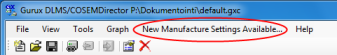

Attention, Device Manufacturers
If your meter type is not yet in the list of supported manufacturers, kindly, send us the settings, and we'll
publish a manufacturer template for your device type, too. This way, you will get more visibility, and our users will get more easy-to-use options.
To get your settings in the list
- Save your settings by creating a new manufacturer with your name and ID.
- Restart GuruxDLMSDirector.
- Go to directory C:\ProgramData\Gurux\OBIS or, in older systems, C:\Program Files\Common Files\Gurux\OBIS.
- Copy the .obx file with your ID, and attach it to an E-mail message to us.
When there are new manufacturer templates available, you get a notification on the UI of GXDLMSDirector.

Getting started with GuruxDLMSDirector
To communicate with a physical DLMS device using GuruxDLMSDirector, the physical device needs to be represented by a Device in the application.
A representative Device allows you to:
- select device manufacturer
- set the type and settings of the connection between the physical device and the application,
- select the required registers of the physical device, if not using them all, and
- read the values of selected registers from the physical device.
Note: When starting GuruxDLMSDirector for the first time after installing it, you get a pop-up saying that Manufacturer Settings are not present. The pop-up also asks, whether you want to install them online from Gurux web. It is recommended to install the latest settings online. This is to avoid mistakes in configurating the manufacturer dependent settings.
The following guides you through
Preparations of the system
You can create as many physical device representatives as you prefer, but even only one representative needs
a parenting collection to exist. You can also create as many collections as you want, to list your devices as you prefer.
I) Create a collection of Devices
- To start a new collection of Devices, select New in the File menu.
- To add a representatives for your physical device in the new collection, select AddDevice in the File menu.
- In the opening Device Properties dialog:
- Enter a unique Name for your device.
- In the Manufacturer drop-down menu, select the manufacturer of your device.
- In the Media drop-down menu, select the connection type to use.
- In the Authentication drop-down menu, select the authentication (None, Low, High), and
enter the Password, if needed.
- Then enter / select the ID information of the device, in the Addressing box, displaying selections and fields according to the selected device manufacturer.
- Next, set the Media specific settings in the Settings box, displaying selections and fields according to the selected connection type.
- Finally, click OK.
The representative of your physical DLMS device now appears in the Devices collection, on the left column of the user interface.
Add all the required representatives in the Devices collection the same way.
Determine the registers to use
To determine the registers of the physical device, retrieve the register objects from the device. If there are registers that are
not needed, you can delete them. To retrieve the registers of a physical device, it needs to have a properly set Device representative,
as guided above.
II) Connect GXDLMS/COSEMDirector to your physical DLMS device
- In the collection of Devices, select the device to connect to.
Note: To connect to all devices, select the collection (Devices).
- In the Tools menu, select Connect.
III) Retrieve the Device register objects of your device
- In the collection of Devices, select the device, whose register objects to retrieve.
Note: To retrieve the register objects of all added devices, select the collection (Devices).
- In the File menu, select Refresh.
This may take a while, depending on the amount of registers in the device and the selected connection type.
- When the register objects are retrieved, save the Devices collection.
This way you won't need to retrieve the register objects every time you start communicating with the device with GXDLMS/COSEMDirector.
To view the register objects of a device, click the plus sign next to the device name, in the Devices collection.
IV) Delete the registers that are not needed
- In the collection of Devices, select the device that holds the register to delete.
- In the Tools menu, select Disconnect, if not disconnected already.
- Click the plus sign next to the device name to view the register objects of it.
- Click on the register object, which you want to remove from the list.
- In the Tools menu, select Delete.
Note: To return a deleted register back to the list, you need to
retrieve all register objects from the physical device again.
V) Delete the devices that are not needed
- Select the device to remove.
- In the Tools menu, select Disconnect, if not disconnected already.
- In the Tools menu, select Delete.
Note: To return a deleted device back into the collection, you need to
add a representative for it again, as guided above, starting from
"I) Create a collection of Devices", step 2.
Communicate with physical devices
Now that your system is all set, you can start communicating with your physical DLMS devices using GXDLMS/COSEMDirector.
- On the left column list, select the item (Collection, Device, or Register) to read.
- In the Tools menu, select Connect, if not connected already.
- When connected, select Read to retrieve the device values.
Note: Once you have selected a Register, you can change
- the ValueType of the register object, by selecting the required type in the drop-down list
- the Description of the register object, by typing a new description in the text field